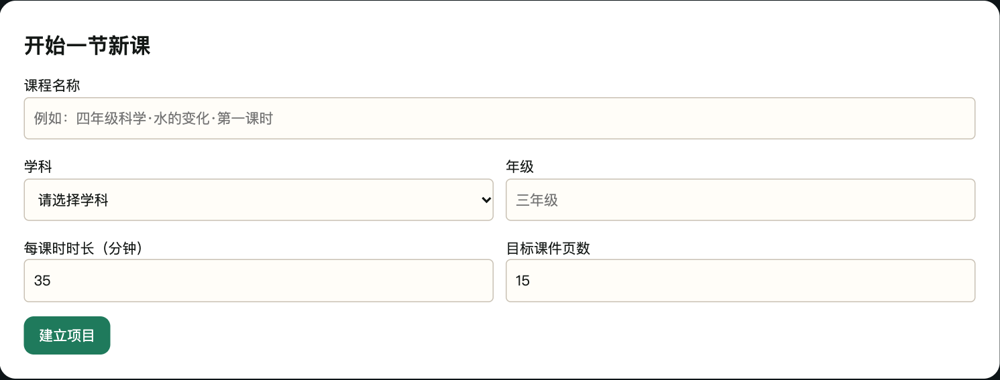
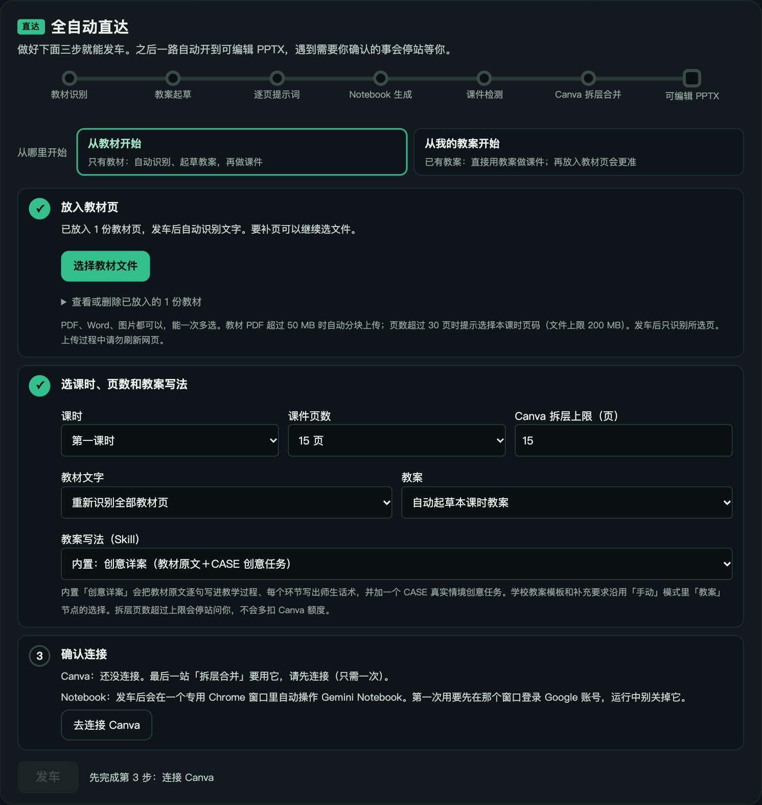
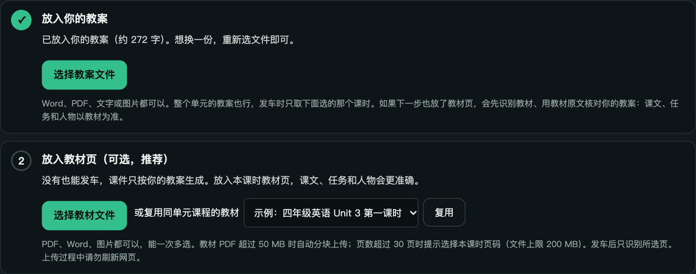
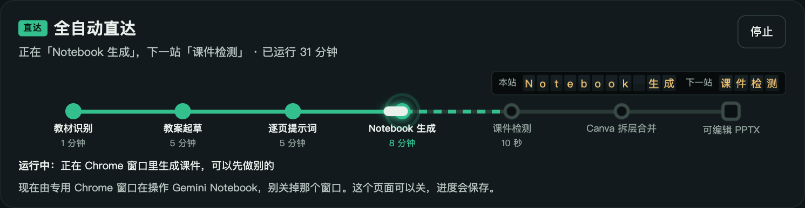
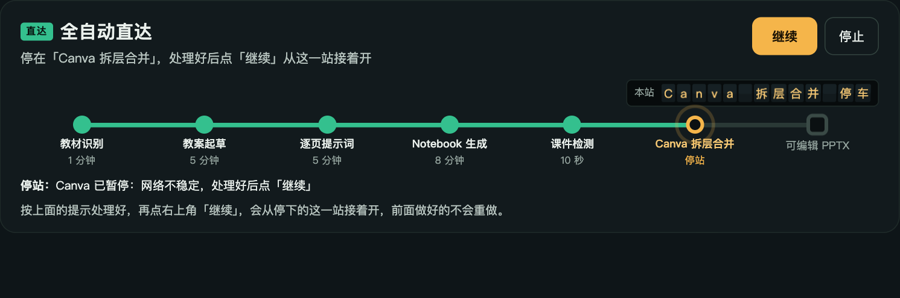
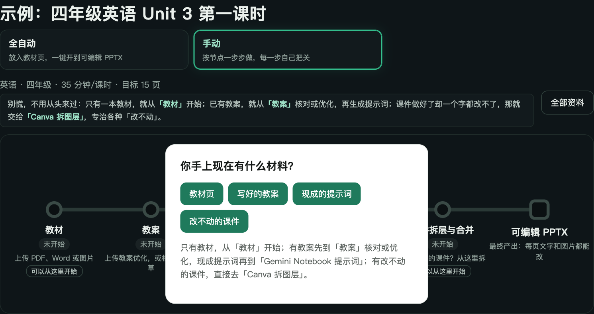
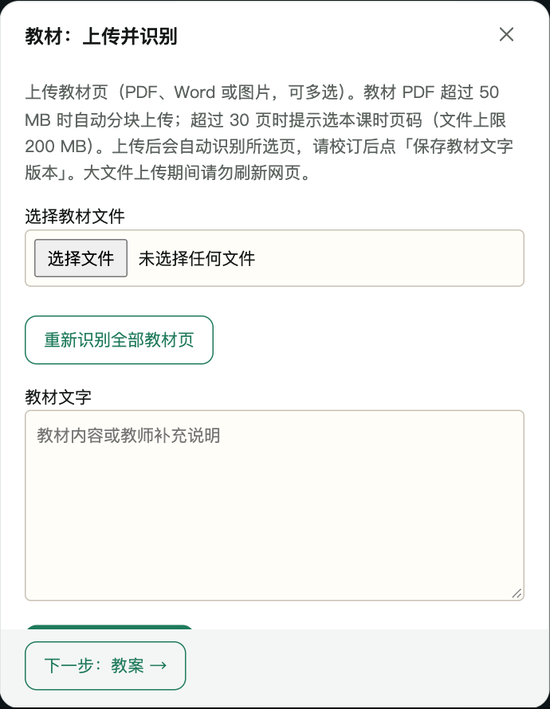
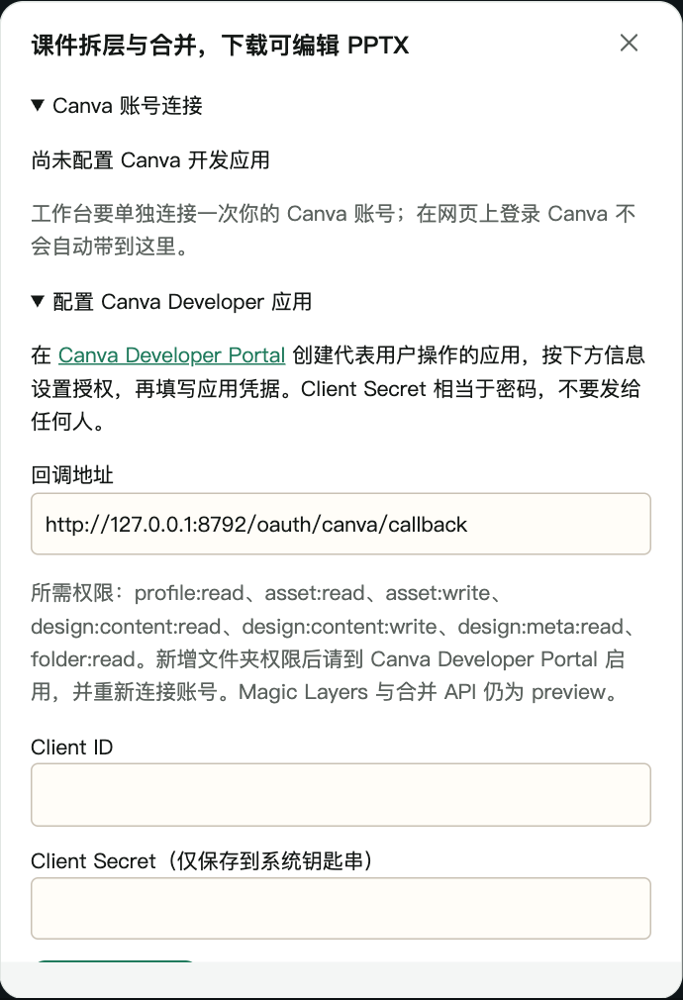

课件超级工作台把一节课的备课串成一条线：教材页 → 教案 → 逐页提示词 → Gemini Notebook 生成课件 → Canva 拆成可编辑图层 → 一份能改的 PPTX。它最想解决的问题是：AI 做出来的课件每一页都是图片，一个字都改不了。
| 环节 | 时间 |
|---|---|
| 准备账号（DeepSeek、Google、Canva） | 20–40 分钟，Canva 最费时间，可以先跳过 |
| 安装 | 10–30 分钟，主要是下载，看网速 |
| 全自动做一节 15 页的课 | 约 30–60 分钟，大部分时间不用守着 |
| 需要什么 | 必需？ | 用来做什么 / 怎么准备 |
|---|---|---|
| 一台 Mac | 必需 | Intel 或 Apple 芯片都可以，建议 macOS 13 或更新。Windows 暂不支持。 |
| Python 3.11 或更新 | 必需 | 工作台的运行环境。Mac 自带的版本太旧，安装脚本会检查，缺了会打开下载页（见第 3 节）。 |
| DeepSeek API key | 必需 | 起草教案、生成逐页提示词。按用量付费，一节课通常几分钱到几毛钱。获取方法见下面。 |
| Google Chrome | 全自动必需 | 工作台会在一个专用 Chrome 窗口里自动操作 Gemini Notebook。 |
| 能使用 Gemini Notebook 的 Google 账号 | 全自动必需 | 生成课件本身。生成次数受你账号的限额限制。 |
| Canva 账号 + 自己的 Canva 开发者应用 | 可选 | 把图片课件拆成可编辑图层，并合并成一份 PPTX。不连 Canva 也能拿到 Notebook 生成的课件，只是每页是图片。见第 11 节。 |
| LibreOffice | 可选 | 检查 PPTX 课件、生成逐页预览。免费，libreoffice.org 下载。 |
双击 .command 文件时，Mac 可能提示「无法打开」或「无法验证开发者」。这是 Mac 对网上下载文件的正常保护：
三个 .command 文件第一次打开时都可能要这样放行一次，以后就不会了。较早的 macOS 也可以按住 control 键点文件，选「打开」。
会弹出一个黑色的「终端」窗口，自动完成下面这些事，你只需要看着：
看到 ==== 安装完成 ==== 就好了，按回车关掉窗口。

| 栏目 | 怎么填 |
|---|---|
| 课程名称 | 建议写清年级、单元、课时，例如「四年级英语 Unit 3 第一课时」。以后在列表里好找。 |
| 学科 / 年级 | 选学科（共 12 个）。学科会影响教案和课件的写法。 |
| 每课时时长 | 默认 35 分钟，按你学校的实际时长填。 |
| 目标课件页数 | 默认 15 页。全自动里还可以选 15 页或 30 页。 |
填好点建立项目，就进入这节课。第一次进入会问你「手上现在有什么材料」，帮你选从哪一步开始，按实际情况点就行。
在课程页最上面点全自动。整个过程分三步准备，然后「发车」。

12-18 或 12-18,20，一次最多 30 页。课程里只保存你选的页。文件上限 200 MB，上传过程中不要刷新网页。
第 1 步点选择教案文件，Word、PDF、文字或图片都可以。第 2 步「放入教材页（可选，推荐）」的用法和上面一样，不放也能发车。后面的「选课时…」「确认连接」分别是第 3、4 步。
| 选项 | 说明 |
|---|---|
| 课时 | 第几课时。教材或教案里有多个课时时，只做这一课时。 |
| 课件页数 | 15 页或 30 页。30 页会分两次生成，用掉 2 次 Notebook 生成次数。 |
| Canva 拆层上限 | 最多拆多少页。超过会停站问你，不会悄悄多用 Canva 额度。 |
| 教材文字 | 第一次选「重新识别全部教材页」；以后改过教材文字的，选「用已保存的教材文字」。 |
| 教案 | 从教材开始：「自动起草本课时教案」。从我的教案开始：「按 Skill 扩写成详案」（推荐；放了教材页会用教材原文核对）或「直接用我的教案」。 |
| 教案写法（Skill） | 推荐内置「创意详案」：把教材原文逐句写进教学过程、写出师生话术，并加一个真实情境的创意任务。 |
三步都准备好，点发车。

| 站 | 做什么 | 大约多久 | 你要做什么 |
|---|---|---|---|
| 教材识别 | 把教材页变成文字 | 几秒到 1 分钟 | 不用管 |
| 教案起草 | DeepSeek 写这一课时的详案 | 1–5 分钟 | 不用管 |
| 逐页提示词 | DeepSeek 写每一页的内容和画面要求 | 约 1 分钟 | 不用管 |
| Notebook 生成 | 在专用 Chrome 窗口里生成课件并下载 | 5–15 分钟 | 别关那个 Chrome 窗口；第一次要登录 |
| 课件检测 | 检查每页是不是图片、要不要拆层 | 几秒 | 不用管 |
| Canva 拆层合并 | 逐页拆成可编辑图层，合并成一份，再下载回来（约 90 MB） | 10–30 分钟 | 不用管；网络不稳时会自动重试 |
| 可编辑 PPTX | 保存结果和字体修复版 | 1 分钟内 | 下载 |
遇到需要你确认或处理的事，全自动会「停站」：进度线上那一站变色，上方写着停在哪里、为什么，右上角出现继续和停止。

| 看到的提示（大意） | 怎么处理 |
|---|---|
| 还没有设置 DeepSeek API key | 双击「设置DeepSeek密钥.command」填好，关掉终端窗口，重新双击「启动工作台.command」，再点「继续」。 |
| 专用浏览器还没有登录 Google | 在弹出的 Chrome 窗口里登录 Google，然后点「继续」。 |
| Notebook 生成次数用完 / 页面没反应 | 等限额恢复后再点「继续」；也可以按提示在 Notebook 里手动生成、下载，再上传到「课件拆层与合并」。 |
| 拆层页数超过上限 | 确认要拆的页数，调高「Canva 拆层上限」后点「继续」。 |
| Canva 还没连接 / 授权过期 | 按第 11 节连接或重新连接，再点「继续」。 |
| 网络不稳定 / The read operation timed out | 工作台会先自动重试几次；仍然停站的话，检查网络后点「继续」，会接着下载，不会重新拆层。 |
停止会结束这一趟。已经提交给 Notebook 或 Canva 的任务不会撤回，可以到「手动」模式里对应的节点继续处理，或者调整设置后「重新发车」。
全部到站后，全自动区域会出现两个下载链接：
| 链接 | 什么时候用 |
|---|---|
| 下载完整可编辑 PPTX | 用 PowerPoint 或 Keynote 打开、修改。文字、图片都是独立的图层，可以改字、挪位置、换图。 |
| 下载字体修复版（WPS 友好） | 用 WPS 打开的话选这一份。Canva 导出的字体在 WPS 里可能显示不对，这一份已经换成电脑上常见的字体。 |
想一步一步自己把关，或者只用其中某一步（比如手上已有一份改不动的课件，只想拆层），切到手动。

| 节点 | 做什么 |
|---|---|
| 教材 | 上传教材，识别文字。可以在文本框里校对、补充，再点「保存教材文字版本」。 |
| 教案 | 上传已有教案优化，或根据教材起草。可以选学校教案模板、写补充要求。 |
| Gemini Notebook 提示词 | 生成逐页提示词和来源 PDF。也可以复制提示词，自己去 Notebook 里用。 |
| Gemini Notebook 生成 | 自动在专用 Chrome 里生成，或者你手动生成后上传。 |
| 课件拆层与合并 | 上传 PPTX / PDF，检测每页能不能编辑，只把图片页交给 Canva 拆层，最后合并下载一份 PPTX。 |

拆层用的是 Canva 的 Magic Layers 接口。工作台需要通过你自己在 Canva 开发者平台建的一个应用来连接你的账号。这一步配置一次即可，界面是英文的；如果卡住，可以约作者远程协助。
profile:read、asset:read、asset:write、design:content:read、design:content:write、design:meta:read、folder:read。http://127.0.0.1:8792/oauth/canva/callback
data/local_workbench/trash，误删了可以找作者帮忙恢复。data/local_workbench 文件夹即可。换电脑时，把它放回新装好的工作台文件夹里的同一位置。| 问题 | 怎么办 |
|---|---|
| 双击 .command 提示「无法打开」 | 见第 3 节第 2 步：系统设置 → 隐私与安全性 →「仍要打开」。 |
| 安装卡住或报错 | 脚本会自动换镜像重试。检查网络后再双击一次「安装依赖.command」；还不行就截图发给作者。 |
| 双击「启动工作台」后浏览器没打开 | 手动打开浏览器，访问 http://127.0.0.1:8792 。 |
| 提示端口 8792 被占用 | 可能之前的工作台窗口还开着，先关掉；或者重启电脑后再启动。 |
| 网页显示「会话已失效，请刷新页面」 | 刷新网页即可。重启过工作台后常会出现。 |
| 上传教材失败 | 看提示原因：图片单张不超过 10 MB、8000 万像素；教材 PDF 不超过 200 MB；PDF 不能加密。上传时不要刷新网页。 |
| 生成的课件不是我选的那个课时 | 检查第 2 步「课时」是否选对；用「从我的教案开始」时，教案里各课时的标题要清楚（如「第二课时」「Period 2」）。 |
| 课件里的人物和教材不一样 | 这一版不带教材人物图，也不能从教材页自动截取人物。可以在「手动」模式的提示词节点里手动写人物名字和特征。 |
| 全自动停站 | 见第 7 节的对照表。 |
| 拆层后有的页还是改不动 | 在「课件拆层与合并」里看该页的检测结果，把截图和页码发给作者。 |
| 想换 DeepSeek key | 双击「设置DeepSeek密钥.command」，然后重新启动工作台。 |
data/local_workbench），不会上传给作者。config.local.json 里；Canva Secret 和授权保存在 Mac 的系统钥匙串里。data 文件夹或 config.local.json 发给任何人。工作台本身免费、开源（AGPL-3.0）。DeepSeek 按用量付费；Gemini Notebook 和 Canva 用你自己账号的套餐和额度。工作台不会替你付费，也不会在你不知情时提交大量拆层任务。
可以在 GitHub 仓库的 Issues 里提交，也可以在小鱼老师的交流群里反馈。遇到问题时，请附上三样东西：① 截图（终端窗口或网页）② 卡在第几步 ③ 你刚才点了什么。
每做完一节课，麻烦花 3 分钟填一下下面这张表（拍照或照着回复都可以）：
| 项目 | 你的记录 |
|---|---|
| 安装包编号（点左上角小鱼 Logo 查看） | |
| 电脑型号与系统版本（苹果菜单 → 关于本机） | |
| 安装用了多久？卡在哪一步？ | |
| 学科、年级、课时；「从教材开始」还是「从我的教案开始」，有没有放教材页 | |
| 全自动从发车到拿到 PPTX 用了多久 | |
| 停站了几次？分别是什么提示 | |
| Canva 连上了吗？Magic Layers 权限检查结果 | |
| 课件一共几页？能直接用的几页？要大改的几页 | |
| 教案和课件内容准确吗？哪里不对 | |
| 最想改进的一件事 | |
| 如果以后收费，你觉得合理的价格 / 方式 |
谢谢你愿意花时间试用。你遇到的每一个问题，都会让下一位老师少走一段弯路。